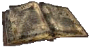

The Main Chamber

He looked around as he walked along what appeared to be road. The landscape hadn't changed in the week he had been there. Nothing but white, dusty sand and mountains in the far distance. The sky was a beautiful clear blue with a smattering of clouds. The road he was walking on wasn't so much of a road per-say, but a hardening of the sand. It had been compacted by the passage of some immense creature that he had yet to see. The sun beat down on him like a hammer striking an anvil and his all black clothing wasn't helping in the least.
He was a tall man, a little over six feet in height, with brown hair, eyes and broad shoulders. He moved with a warriors grace. He wore black breeches, black boots, a black shirt and a black cloak. Even his sword's scabbard and hilt were black. The only variance of the black was the badge over his left breast. It was the outline of a red fist with a golden skull on it. The symbol was the ensign of the Blackhearts mercenary company and the all black ensemble was their uniform. The golden skull signified the captain of the company, Mercer Blackheart.
This is a fitting place for it to end, he thought. I have tracked you for over two years bitch, and now it will finally be over. She had eluded his vengeful grasp for over two years, ever since the betrayal. Pelion was the plane where heroes who were betrayed by those whom they thought loyal and died for it, went. So why not a living mercenary captain following a woman who had betrayed him and almost cost him his life?
Two long years ago Liandra betrayed him to the tanar'ri. His company had been taking a break in Sigil when the raid happened. Scores of tanar'ri poured into the inn he and the Blackhands had been crashing at in the wee hours of the morning. Grim, Xim, Raven and Mouse had escaped, but Mercer and Janus had been captured. Liandra had made a deal with the tanar'ri. She'd make sure Mercer and Janus were captured and they wouldn't kill Mercer. She had loved him, though he didn't lover her. It was her love for him that twisted and became something impure. She thought he would love her if he didn't have all the worry associated with being a mercenary captian. She was wrong. When her betrayal came into the light Mercer went into a killing rage that left only Janus and him alive. He killed the tanar'ri that had raided the inn and the humans that were helping them, but Liandra escaped. He had been on her trail ever since.
"Never trust a fiend," he said to desert, "not even a half fiend. Except Janus. Janus would never betray me like that bitch did. Janus is a true friend." He had been in the sun a bit too long.
"Whoa, whoa, whoa there Mercer boy. You ain't gone barmy yet," he said to himself. At least he hoped he hadn't gone barmy yet. The madness chained in his mind had gotten loose that night two years ago, and it wanted out again. It had a will all it's own, though a malady of the mind shouldn't. He supposed it was the dark, evil part of him that he had suppressed for so many years that was the source of the madness and it's will. He consciously chose to not be evil when he was young, and pushed down all of the impulses that he had had since. He didn't choose to be good though, either. He chose to walk that thin line of neutrality, that gray area between the light and the dark. It was a dangerous path his mind chose, and his madness was the repercussion.
The madness first showed itself when he was fifteen summers old. He was walking home from some errand or another his parents had sent him on when he was accosted by some of the local bullies. He was a non-violent person at the time, and wanted no fight. The bullies thought differently. They had started they're beating when something seemed to snarl in his mind. He heard it quite clearly over the din of the bullies' laughter and grunts of effort. In his mind's eye, he saw the beast. It was small then, less than a quarter of it's current size, but it was still intimidating. It was all claws, fangs and muscle with horrible eyes that glowed a sickly green. There was an intelligence in those eyes, even back then, though it was only a bare glimmer. The beast had come from the dark recesses of his mind and took control of him. He no longer felt the pain of the kicks and punches he was receiving, all he felt was hate and the need to hurt these boys. He did that. When he regained control, the bullies were sprawled on the sidewalk in small pools of blood and human waste. All of them had broken bones of some sort, whether it was a nose, arm, leg or rib.
Mercer had chained the beast after that, and it had stayed chained until that night two years ago. It had gotten loose and made him able to kill fiends as easily as he could kill a human. The sheer power it gives me is not worth letting that thing loose, he thought. He had reinforced the chains on the beast, but that didn't silence it's voice. It almost constantly begged for release or howled for blood or snarled in impotent rage. It was disconcerting to have a voice that wasn't quite his own in his head, but he had grown used to it.
He was deep in thought and not paying attention to his surrounds as he walked, which was why he didn't see the other travelers until he was almost on top of them. They were human, or at least they looked human, and they were sitting beside the road with two giant lizards with saddles on them. The men were shorter than Mercer, maybe five and a half feet, and were whipcord lean. They wore billowing tan robes and white cloths secured on their heads with a gold band. They were sun darkened and weary.
"Hey you," one of them said as Mercer was passing. He waved his hand to catch Mercer's attention. His arm was heavily scarred. "Do you have any water on you? We can pay you." He had a deep rolling voice, more accustomed to yelling between dunes than normal conversation.
"I've got water if you've got information," Mercer told the man. He needed to know if he was going in the right direction. His last contact said that Liandra was heading for a city called Mogra or something like that. He was only a week or two behind her.
"We know many things, friend. What do you want to know?" the man looked relieved that he wouldn't have to part with any of his jink.
"Do you know of a city named Mogra?" Mercer asked casually. He didn't want to appear too anxious. He knew how to bargain, and it was always best to seem disinterested. He also didn't want these men to know he had an infinite supply of water thanks to Janus.
The man eyed Mercer for a moment before answering. "Yes, we know of the Mogra City. It is where we are heading now." He looked like a hawk about to seize a mouse. Not a comforting look.
Mercer stared at the man with his dead, brown eyes. He didn't glare, or look angry. He had no expression on his face at all. Another little trick he learned. Appearing angry didn't get you anywhere. Looking like you could rip a man's throat out, eat it and continue talking to a companion about the weather, on the other hand, got you everywhere. The Empty Face was something he had mastered soon after coming to the planes, and it had never failed him.
The man soon started fidgeting under that empty stare. He glanced at his companion, who had paled slightly during the silence, and his companion nodded slightly.
"The Mogra City is a few days a head of us," the man said. "Follow it's trail and you can't miss it. Unless your blind, but even then, it'd be hard." If he had expected any reaction from his pitiful witticism, he was disappointed. Mercer continued to stare at him with the Empty Face.
"Trail?"
"Y-yes," the man stammered, growing more uncomfortable. "You're standing on it now." He gestured with his arm, indicating the road of hard, packed sand. Mercer raised an eyebrow. A city that could move, while unusual, wasn't all that surprising. This was the planes, after all, and anything is possible in the infinite planes.
Mercer glanced back at the man, and saw that he was lowering his arm, as if he had signaled someone. Mercer's Empty Face turned hard and cold. While he didn't trust these men, he at least expect a bit of respect for a fellow traveler. He doubted that these men even needed water. Damn, I hate ambushes, he thought. Especially ones this transparent.
He sighed, and threw back his cloak, revealing his jet black clothing. The man stared at him as if he were mad, which he was. His companion's eyes nearly fell out of their sockets when he spied the ensign on Mercer's breast. He started grabbing his friend's arm, whispering and pointing. The other man finally looked and his jaw fell wide open when he realized the import of the ensign.
Mercer paid them no mind, he gave his ears his full attention. He listened to the sound of the desert, the slight breeze, the sand shifting. He heard nothing unusual for several seconds. Then he heard what he had been listening for, the sound of a carefully placed foot. He spun and drew his sword in the same motion. It was a katana made of ba'atorian green steel, a very valuable weapon. The blade had intricately carved dragons going up each side and a small emerald was placed just above the hilt guard.
The man behind Mercer was surprised at the sudden movement from one he thought completely distracted. He was the same height as the other two and wore the same clothing. He carried a scimitar in one hand and a buckler in the other. The two seconds it took the man to regain his composure were the last two of his life. Mercer came in low, leading with his sword and the man tried to step back, but was too slow. The blade flashed upwards, catching him under the sternum, split the bone, and continued up, neatly cutting the man's face in half. The man fell in a fountain of blood.
Mercer knelt and wiped his blade off on his attacker's robe, then turned around. His baleful gaze settled on the two men who's job it was to distract travelers. Each man was almost as white as the surrounding sand. He took a step toward them and they fell flat on the ground, prostrating themselves begging his forgiveness. He stood over they're exposed necks and debated whether or not to kill them. In the end, their usefulness overcame his indignation.
"Get up," he growled, kicking at them. They hurriedly got to their feet, but kept their heads bowed not meeting his gaze. He felt utter disgust for these men, these parasites. If not for the fact they held information he needed, he would have killed them without blinking.
"Why?" he asked.
"We did not know it was you," the first man said. The second man added his agreement. "If we had, we would not have tried to attack you. Even in Pelion the Blackhearts are known and respected. We meant no disrespect, honest."
Mercer grunted. He definitely didn't like these two, nor the corpse that was their companion. "Is what you told me the truth? Is the Mogra City close?"
"Yes, captain, it is," the man said. Again Mercer grunted. Emboldened by his lack of outward animosity, the man mustered his courage to speak without prompting. "We had heard you were dead, and that one of your lieutenants took command of your company."
"I am very much alive, and the command of my company is none of your concern," Mercer barked. The men flinched. "What are your names?"
"I am called Kobar al'Habib," the first man said.
"And I am Kilban al'Habib," the second one said. "Anything we have is yours, even our lives if you so wish it."
Mercer smiled, it wasn't a pleasant smile. "If I had wanted you dead, you would already be so. You have something that is worth keeping you alive right now, and that's information." The two men visibly relaxed and finally brought their heads up to meet Mercer's gaze.
"What is it you wish to know?" Kobar asked.
"There is a woman I am tracking, an alu-fiend. She goes by the name Liandra, and last I heard she was heading towards the Mogra City. Have you heard anything bout her? She'd be a week or so ahead of me." He hoped they had some information, he didn't like letting men he really wanted dead to live for nothing.
"We have not heard of her, master," Kilban answered. He noticed the way Mercer's eyes narrowed and hurried to finish. "We know nothing of her, but we have many contacts in the City. We could find out if she is there and where she is within an hour or two of our arrival."
He stared at the two men for a long moment. He hated this part of the chase, having to rely on others for information of her whereabouts. The Blackhearts had a contract broker in the City as well, but no one had ever contacted the man. Mercer wasn't even sure if the broker was still alive, let alone what he looked like. He didn't want to have the help of these two, but it looked like he had no choice.
"If you play me false in this," he warned them in a cold voice, "I'll gladly slit each of you from crotch to craw and leave your entrails for the buzzards." The men nearly fell over themselves assuring Mercer that they wouldn't mislead him. They quickly retrieved their possessions from the ground and adjusted the saddles on the lizards in preparation for departure. Kobar went behind a dune and brought out their other companion's lizard mount and graciously offered it to Mercer. He had never ridden a lizard before, but he'd be damned if he'd let these two know that. He mounted the lizard and told them to lead the way.
"Now I've seen damned near everything," he muttered to himself when he saw the Mogra City. The City was on the back of a giant turtle. The thing was enormous, it's shell had to be at least five miles wide. It's massive legs left huge indentations in the ground, but they didn't last long. It's head towered above the sandy ground as it stared forwards, with a high tower built on top of it. The buildings appeared to be built out of some sort of white brick, with flat roofs. At the back of the shell, just to the side of the tail, a large ramp was drug along the ground. It was the ramp that created the hard packed road. It must weight a ton, he thought looking at the ramp.
He had been traveling with the al'Habib brothers for a little over a week, and he hated every minute of it. The men were trying to outdo each other for who could suck up to Mercer the most. If I had wanted servants, he had thought two days after they met, I would have used the companies money to become a noble. He had tried threatening them, but that only made it worse. Being nice and friendly hadn't gotten him anywhere either, nor had trying to bargain with them. He had finally settled with icy silence. That left him with a little time without one or both of them asking if he needed anything.
"I'm so sorry it took longer than I had predicted, master," Kilban said. "Because the City moves, it's very hard to make an accurate estimation." He seem immensely pleased that he had beaten his brother to the apology.
"Once we are in the city," his brother chimed in, "we'll set you up in the best hostelry. Then we'll scour the City looking for any word of Liandra." The fact that he had the gall to say her name in Mercer's presence spoke volumes on how he viewed himself as Mercer's "favorite".
Mercer grunted and urged his lizard forward, putting himself ahead of the two men. He hated them more than ever now, but their fawning over him had earned them their lives. He hated to kill something so obviously spineless, even if they deserved it. He knew that sentiment would end up leaving him with a sword in his back one of these days, but he was an old dog who didn't feel like changing his habits. The City was still at least a day ahead of them, less if they pushed on during the night, but Mercer wanted to be gone from these men as quickly as possible. He fell into the natural rhythm of the lizard's gait and lost himself in his thoughts.
He didn't know how long he had been daydreaming, and he didn't know what had startled him out of it until he heard the screaming coming from behind him. He turned in time to see Kobar falling from his mount with an arrow in this throat. His brother started screaming and frantically tearing at his belt for the short sword he carried there. A second arrow sped out of the desert and silenced him.
At the first scream Mercer was off his lizard and on the ground beside it. He drew his sword and blistered the air with a string of curses as Kilban hit the ground. He searched the desert as intently as he could under the circumstances, but spotted no one. No more arrows came in, and after a few minutes he got tired of waiting and stood. What he saw almost put him back on the ground. Standing maybe ten feet away, with her back turned, was Raven. She wore the same all black clothing that Mercer wore, and her midnight hair blended in perfectly with her shirt. The leather of her breeches fitted her legs like a second skin, showing them off to good effect. She held her bow in her hand with an arrow notched as she scanned the desert.
I've got to be truly mad now, he thought. This can't be her. He took a step towards her and called her name. She turned and Mercer knew it was her. The same almond shaped eyes, almost as green as his sword, met his and she smiled. She put her arrow back into the quiver on her hip and stood there staring at him, still smiling. She looked the same, though that came as no surprise. She was short, around five and half feet, and slender, with pleasant curves at the hip and breast. She pushed a stray strand of hair behind her ear, revealing it's point.
"Where's Mouse?" was all he could think to ask. Her half-brother was rarely away from her.
"He stayed with Janus and the rest," she replied. She had a lilting sing-song voice. A very pleasant voice to listen to. At night, sometimes, when they had finished their love making, she would sing to him in her native tongue and he'd fall into a deep dreamless sleep while listening to it.
"Why are you here, and why did you kill those two?" he asked, pulling himself away from the memories of the nights they had spent together.
"Janus had heard that the traitor was in Pelion and Mogra City was the obvious choice for her to go. He sent me to try to keep an eye on you and to let you know that 'Hearts are still in good shape." Her smile vanished with the blink of an eye. "I should have left them alive. I think a dagger in your back would teach you to pay attention more and daydream less!" She continued on in this vein, telling Mercer that he'd gone soft and that it was a wonder he had lived this long alone without anyone to watch his back. He grinned throughout the lecture, knowing it was her way of telling him she still cared. He replayed the memory of seeing Kobar fall, and realized that the man had a dagger in his hand ready to throw as he fell.
He let her continue until she started slipping into Elvish for some of her more colorful insults. He walked up to her, grabbed her shoulders and kissed her soundly. When he finally let go of her, she was slightly out of breath and her cheeks were flushed.
"Well," she muttered, "as long as you don't make the same mistake again, I guess I can forgive you. Now what do you call that little peck you gave me?" She demonstrated the proper way to kiss a woman after not seeing her for two years to Mercer. He rather enjoyed the lesson. His surprise at seeing one of the few people he trusted in the most unlikely of places pushed from his mind his hunt for Liandra. He didn't know how long they stayed in each other's embrace, but when they pulled apart he felt immensely better.
"So, the 'Hearts are doing good?" he asked when he had regained his composure.
"So now, not only are you a slack witted day dreamer, but your also deaf," she replied with a smile. "Yes the Blackhearts are in good shape. Janus has gained some new recruits since last we heard from you. He has also increased the number of Blackhand guards to a total of twelve."
"Seven new 'Hands?" he asked, impressed. It took Janus years to accept Raven and Mouse as 'Hands. He didn't like leaving Mercer's bodyguard choices just up to Mercer, especially not after Liandra.
"Yup. There's Gregarious, a tiefling; Damnell, an aasimar; Sliverbow, another elf; Bear, a human who lives up to his name; Zippliplaploo, a slaad (the gods only know why Janus trusts him); Morsh, a lizard man; and T'ch't'ket'pok, a thri-something or other. He's a big insect. They're all good men, figuratively speaking. Janus went out of his way to test their loyalties and those were the only ones to pass his tests. He trusts them, so the rest of us do too."
Mercer stood there, mulling over what she had told him. Janus was one of the few people he trusted anymore and if Janus vouched for these new bodyguards, then Mercer figured they were good enough for him. At the thought of bodyguards and trust he immediately thought of Liandra and the betrayal. His good mood crashed instantly. He balled his hands into fists and wished the traitor dead for the thousandth time. Raven noticed the change in his expression and guessed the source of his mood shift. She tactfully suggested that they loot the bodies and continue on towards the Mogra City. They went about the grizzly task, mounted two of the lizards and started towards the City.
"We have a contract broker in the City, don't we?" Mercer asked as they neared the City. They had been following it for three days now, two longer than estimated. Distance is tricky in a desert and when the city one is heading towards happens to be moving away from you, well then it becomes a bit more than tricky. They were still a couple hundred yards away and Mercer knew his first estimation of the turtles was correct. The beast's shell was about five miles wide, with a high wall around the edge. The buildings he could see were made of some sort of white brick and were almost uniformly square with flat roofs. The wall obscured his view so he couldn't be sure.
"Yup," Raven said, snapping Mercer out of his reverie. It seemed that ever since he came to Pelion he kept loosing track of things. He guessed it was the monotonous landscape that made his mind wander so much.
"Who is it? I don't remember and since he's never contacted me about a contract, I don't even know if he's still alive."
"Well, Alus died last year in a riot over something so Janus sent Oliver Makabuk to take his place." He always enjoyed listening to Raven talk, even when she was yelling at him.
"Oliver?! What happened to him?" All of the Blackhearts' contract brokers were members who had been injured in battle and couldn't perform their duties anymore. Usually they lost a limb, but some lost more. He had always liked Oliver, he had a sense of humor akin to Mercer's and he didn't like to think of what the halfling lost to become a broker.
"One of our contracts took us to Carceri, more specifically, to the site of one of the Blood War battlefields, and Oliver got caught in a magical trap that the ba'atezu had set. A real nasty one too. If it hadn't been for Grim and a couple of Shields, he wouldn't have lived. He lost a leg and part of his right hand. He took it kinda bad, but he volunteered to be the Pelion broker, so he still had some of his old spark left the last I saw him." She grew quiet as she remembered the halfling's cherubic face and ready smile. She, like most of the Blackhearts, had liked Oliver upon first sight and his maiming had hurt her deeply.
Mercer fell silent as he pondered this. He genuinely liked Oliver, and the fact he was the best thief in the 'Hearts was an added plus. Oliver had a love for life that was astounding, and sometimes rather nauseating, especially in the early morning. Even in the midst of battle, the halfling was smiling and honestly happy. Mercer could understand being happy to be alive after a battle, but not in the middle of one.
He pushed all of that aside as they approached the ramp leading into the City. They had ditched the lizards awhile ago and were on foot. The ramp was huge, probably close to half a mile wide, and was made of some sort of petrified wood. It was steeply inclined, so he was puffing a little when they reached the gate house. The gate was guarded by two men who were tanned a deep bronze. They wore white, knee length smocks, and each had black hair, though one's hair was graying. Mercer judged him to be a veteran, and most likely in charge of the gate. Both wore short swords belted at their wastes, and shields strapped to their arms, as well as long spears held in their hands.
As Mercer and Raven neared the gate, the spears crossed, barring their path. The veteran regarded them with an apologetic half-smile and said, "How long will you be staying?"
Mercer looked at him for a moment while the question sunk in. "Oh," he said, "we'll be staying here a couple of days or a couple of weeks. We honestly don't know."
"Well," the guard said, looking at him as if he were sun-baked, "it'll be either one gold piece a day or one gallon of water. The choice is yours, but you have to pay up front."
Mercer grumbled about the price, but decided to pay in gold instead of water. He didn't want it common knowledge that he had a decanter of endless water in his pack. He dug twenty gold out of his pouch and paid for him and Raven. He started forward when the younger guard barked at him to stay put.
"I'm sorry, but we're not finished with the interview," the veteran said.
"Well, get on with it then," Mercer demanded. He was starting to get annoyed with the guards. They were keeping him from his hunt.
"Are you by day or by night," the younger guard asked. He seemed to put great weight into the question, though Mercer had no idea what it meant. The blank look he got from Raven was of no help either.
"I'm afraid I don't understand the question," Mercer told him, in a pained voice. He hated this delay.
"It basically means do you worship Marduk, the justice bringer or Anshar, the goddess of night?" the veteran explain patiently, as if talking to a child. A very stupid child.
"This is the only thing I worship," Mercer replied, pointing to his sword.
"That is an unsatisfactory answer."
"I don't care."
"You had better start caring stranger."
"Look friend, I don't care for your deities, and I'm sure they don't give a damn for me. I'm just here to find someone and I am pretty sure that won't infringe on anyone's worshipping practices." That is, of course, unless the bitch is hiding in a temple. He thought it was wise to not speak that thought out loud.
That sparked a rather heated argument between Mercer and the guards. It lasted for several minutes before Raven broke in.
"Look," she said calmly, "we're here as guests of Oliver Makabuk. I'm sure he'll vouch for us. Why don't one of you go run and find him?" All three of them seemed to have forgotten she was there. She leaned on her longbow and grinned at Mercer as the veteran nodded to the younger guard. He promptly ran into the City. He returned a few minutes later with Oliver in tow.
He was tall, for a halfling, being closer to four feet than three, with a wide girth. He had curly brown hair and eyes, the same color, that seemed to dance with merriment. His face was plump and pleasant, with a wide and ready smile. He wore simple leather breeches and a white tunic, with a gold belt fastened around his ample belly. He walked with the aid of an ornately carved cane and all but the index finger and thumb of his left hand were missing.
"By all the gods," he exclaimed at seeing them, "I thought you'd never get here! You take too much time walking everywhere. You need a good sturdy horse, that's what I say. But does he ever listen to me? Noooooo. He just continues walking and continues to be late to everything. I swear boy, you'll be late to your own funeral." He turned his attention to the veteran. "Now what seems to be the hold up?"
The guard told Oliver the jist of the situation, while leaving out the unflattering argument. Oliver laughed outrageously at the absurdity of it all. It took him a few minutes to stop laughing and catch his breath, though he tried to hide some of the giggles that kept erupting while he talked to the veteran. He explained that he knew both Raven and Mercer and that he'd vouch for them. The guards didn't look overly pleased, but accepted Oliver's word. Oliver nodded to the guards and led his two guests into the City.
It was not a usual city, Mercer decided. The streets were actually the tops of walls that looked down into the City itself. In the middle of the City was some sort of tower or palace, Mercer couldn't tell from this distance. Oliver led them along the streets pointing out the various interesting places, all of which Mercer promptly forgot. He got thoroughly lost when Oliver led them down some stairs and into the City itself, around some of the more cramped streets, then back up some more stairs and on top of the walls again. Mercer came to a startling revelation while following the chubby halfling. He realized that he did not like this city at all, and was glad that no contract had ever come in from here.
Eventually, through three more trips into the City proper, and three more trips up onto the wall/streets, they were finally at Oliver's house. Like the other buildings in the City, it was made of white brick, with a flat roof and lots of windows. The door was made of stout oak, with very ornate hinges and doorknob. The knocker looked like the head of a balor with a very long tongue. Oliver lifted his cane and rapped the knocker soundly before opening the door and leading them in. The interior of the house was a lot different than the outside. Inside was all warm spring colors, whereas the outside was utilitarian white. The rug on the living room floor was a bright forest green, as was the upholstery on the chairs, two human sized and one halfling sized. There were potted plants hanging from the ceiling and a very small palm tree sitting in the corner. The hearth was cold, with logs in it waiting to be lit, and opposite it, and behind the halfling sized chair was a bookcase, filled to the brim with books. Oliver still loved to read, even after all he went through. A door opposite the one they were standing in led to the kitchen and bedrooms.
"Welcome to my home Cap'n," Oliver said after he had ushered them in and shut the door. He plopped himself into his chair and pulled out a bag of tobacco and his pipe, it was made of burnished word and was carved into the shape of a naked halfling woman. Mercer's eyes lit up at seeing them. He'd ran out of cigarettes about half a decade ago, and so had taken up the pipe. He had lost his pipe shortly before entering Pelion and hadn't had a good smoke in awhile. Oliver offered him one of his spare pipes, this one made of ivory and carved into a dragon, and his pipe bag. Mercer stuffed the pipe, plopped himself into one of the other chairs and lit it with a contented sigh. Raven made a disgusted noise and sat down in the other chair.
They sat in companionable silence for awhile until Mercer spoke. "Any news on the bitch?" he asked in his usual tactful manner. Oliver blew a smoke ring before answering.
"She came through here about four or five days ago. She stopped by to see Alus. I guess she didn't know he got himself printed large and bold into the dead book. She was very surprised when she found me, and seemed genuinely sorry to hear about what happened to me. She didn't bother to ask if she could hole up here 'cause she knew I'm your man, so she left rather abruptly. I had some people follow her and she left the City heading east."
"She made no attempt to conceal her presence, or her departure?" Mercer asked after a moment. The thought that she had been here less than a week ago started his blood to pumping and his adrenalin to flowing with the thought of the hunt. His eyes had taken on a wicked gleam, and a small, unpleasant smile spread on his face.
"Nope," the broker said as he tapped out his pipe into an extravagant ashtray beside his chair. "She said she knew you were following, though she didn't know how far. She said she was getting tired of running and was looking for a place to finish it. She thought Pelion was a very fitting place."
"Aye," Mercer said quietly, "very fitting." Both Raven and Oliver glanced at him with slight frowns. He didn't notice. His eyes saw her face, his ears heard her voice, and his mind thought unpleasant thoughts involving her. Liandra, he thought, it ends here. It ends soon.
"At any rate," Oliver's cheerful voice cut through the tension that had been building. "You won't be going after her tonight, and I won't know where she exactly she went until tomorrow, so I guess I've got some guest rooms to fix up." He heaved himself to his feet and left the room, limping worse than he had on the walk from the gate house. His voice was cheerful, but his demeanor was not. He was worried, though he wouldn't tell anyone, and he was scared. He knew Mercer would set out after Liandra at the first opportunity, and to Stygia with anything that got in his way. He didn't know what would happen when Mercer finally confronted her, and he wasn't sure he wanted to know. All he knew was that he felt old, and more useless than he had ever felt in his life.
With a visible effort, Mercer pulled his thoughts away from what he wanted to do to Liandra, and brought himself back to the present. His pipe had long since gone out, and the shadows on the floor had lengthened. He looked around and was surprised to see he was alone in the room. He didn't think he'd been zoned for that long, but apparently he had. He knew his silence and preoccupation with his vengeance had probably concerned his friends, but at the time, he could do nothing else.
He got up from his chair, surprised at how stiff he was, and walked through the door through which Oliver had gone earlier. The short hallway was dimly lit and had three other doors, ones to the left and right and one dead ahead. He heard the sound of voices and of pots and pans clinking coming from the one opposite him, so he chose that one. He entered into a small, but very pleasant, kitchen. It had the usual kitchen implements, a carving island, racks of pots and pans, a stove and the like, but in proportion to a halfling. Several covered pots were on the stove and one of them started to boil over as he entered. There were some stools in the kitchen, also halfling sized, two of which were occupied by Raven and Oliver. Raven looked kind of silly sitting on the stool, but the curve of her backside detracted from the silliness quite a bit.
He was admiring the view when he was noticed by Oliver, who by that time had taken the pot off the stove. The cherubic halfling smiled at him and waved him to a stool. Raven turned around and looked at him, and for the first time in a very long time, Mercer found himself blushing. That, of course, set Raven to laughing. She laughed so hard that she fell of the stool and landed on her very much appealing backside. This, of course, started Mercer to laughing. Oliver, who hadn't noticed Mercer's blush, laughed for the sheer pleasure of seeing Mercer laughing again.
Mercer helped Raven to her feet, and Oliver shooed them out of his kitchen. He told them that supper would be ready shortly and that they were just under foot. Which, of course, set them all to laughing again. He gave them both tankards of cold ale and told them to wait in the living room. As they left the kitchen, still chuckling, Oliver's voice came through the door ordering them to start the hearth fire.
They entered the living room and did as they were commanded, because who in their right mind would dare contradict a halfling who had access to very sharp knives? The fire blazed merrily as they pushed the two human sized chairs so that they flanked Oliver's facing the fire. They sat and drank from their tankards, not talking, not needing to talk. The mood had been brightened considerably since Mercer went into his dark catatonia, and they were all glad for it.
In short order, their host came into the living room carrying a tray almost as big as he was. Mercer helped him with it when it looked like the halfling was going to fall. Oliver produced a stand from somewhere, and had Mercer set the tray on it. He told them to dig in while it was hot, and they did. Mercer hadn't eaten a home cooked meal in over a year, and he enjoyed every succulent bite of the unknown animal meat that floated around in the stew. The bread was still warm and slathered with butter, the ale was cold and plentiful, and the company was the best he could have asked for. It took him a minute to realize that he was actually happy. It was almost as if the events of the past two years had never happened. He was among friends who loved and cared for him, and he was happy.
When the meal was finished, Mercer carried all the dirty dishes into the kitchen and placed them into the sink, as per Oliver's orders. He retrieved three brandy glasses and the snifter of brandy, again as per Oliver's orders. Back in the living room, he passed out the glasses and poured the brandy. They sat in comfortable silence as they sipped their drinks and Mercer and Oliver smoked their pipes. After awhile, Oliver excused himself, saying he was going to bed.
"I've got to be up early so I can sniff some things out for you, Cap'n. Your rooms are past the door on the left." He bowed and left Raven and Mercer alone.
Mercer stared into the fire, considering the events of the past couple of hours. He came to understand that his life over the past two years had been very empty, and very desolate. He missed his friends, those few he trusted anymore. No amount of good food, or good ale, or good company could heal the scar Liandra had given him. He hadn't lived during these past years, he had merely survived. There might not be much of a difference to others, but to Mercer, the difference between living and merely surviving were large and many.
His thoughts were interrupted by a shadow that blocked the fire from his view. He looked up into Raven's face. Her pale skin was framed by her midnight tresses and the shadows caused by the firelight made her look all the more exotic. Her expression was all at once one of love, concern, and fear. He stood and took her into his arms, he knew it was the right thing to do. He held her for a long time before she spoke.
"I love you," she said into his shoulder. She tensed up as she said it.
"I know you do," he said quietly, "but you know that I do not love you." Her body became like stone. "I care for you, very deeply, but I don't love you. I'm sorry. I wish I felt differently, but I cannot."
She went from a statue to a living, and hurting, woman in the space of a heartbeat. Mercer could feel her shoulders shake with her sobs and he felt the wetness that soaked through his shirt as she cried. He knew this would come, and he dreaded it. He knew if he hadn't said what he did she would eventually come to hate him, and he wouldn't risk that just to spare her feelings now.
"I know Mercer," she said when her sobbing subsided. "I know. I guess I've always known, but I didn't believe until I heard it." He rocked her gently as she spoke, offering her what comfort he could. He knew what she felt, and he wanted to spare her that, but he couldn't.
Finally, she broke away from him, sniffling and wiping a hand across her eyes. She looked like a child right then, though he knew she was at least five or six times his age. She saw her own pain mirrored in his eyes and knew that she would continue to love him even if he didn't reciprocate that love. She knew loving a human was always destined to end in pain. Elves outlived humans by many centuries, or millennia at times. She was warned against it by her father and her elders, yet she found herself loving this one crazy, reckless and frightening human all the same. The mind cannot tell the heart how to feel, she thought gazing into his brown eyes. Those same eyes that has shown hatred, mirth, joy and madness. Those same eyes that had looked upon things no human could have and remained sane. Those same eyes she was loosing herself into.
"It's late," she said quietly, still looking into those twin orbs of pain. "We should get to bed." She reached out and took his hand. He smiled tentatively at her, and she smiled back.
"I'm glad your back," she said, meaning it in many different ways.
"I'm glad to be back," he replied to all the meanings.
Her smile went from tentative and loving, to one that he could only call naughty. "Oliver went through the trouble of fixing up two guest rooms. It seems a shame to make a mess out of both of them."
"A shame," he agreed, grinning. He leaned down and kissed her gently. She winked at him and led him through the door.
"It took a gods be damned week to get here," he said the avaga. He had bought it before leaving the Mogra City. It was the common beast of burden for the people who lived in the City, and it had cost him, actually Oliver covered the cost, a small fortune to buy it and all the food that was necessary for the beast. It was a tall lizard, not like the lizards he and Raven had taken from the al'Habib brothers. This one looked like a reptilian ostrich to Mercer.
"It'll take me at least a bloody month to get back to the damned City," he continued his tirade. Though it did no good to talk to the avaga, it made him feel a little better to actually talk to it. "If that bitch ain't in here, I'm going to be severely pissed off." Oliver's contacts had told him that Liandra had left the Mogra City heading east four days before Mercer arrived in the City. The only place that anyone knew of in that direction was an ancient ziggurat, built ages ago to house some dead king or another. He had followed the directions he had been given and finally arrived.
The ziggurat was huge, going up at least a hundred feet with too many tiers to conveniently count. It was made of some sort of brown stone, and Mercer, being no mineral expert, had no idea where it came from. The thing had a myriad of carvings on it, depicting things that only made Mercer's head hurt to think about. A lot of curving, snake-like creatures entwined were carved along the sides of the stairs going up the center of the ziggurat, along with several winged serpents. He supposed that someone must have felt they were pretty, or else they wouldn't have put them there.
He disregarded the carvings and concentrated only on what was going to happen next. The confrontation with Liandra. He knew only one of them would walk out of that ziggurat, and he didn't know which. When he left Raven and Oliver a week before, he felt himself slipping back into the Survivor, and away from Mercer. He knew it was necessary to do that, but that didn't mean he had to like it. His night with Raven had been the crowning point of the realization that living and survival were vastly different. She had been tender and loving, and had not demanded anything afterwards, no affirmations of love, no promises to return, nothing. She had willingly given herself to him, and to the desire that was in them both. She loved him for what he was, and demanded nothing in return. He had lost himself in that ageless act, and had found himself again in the sweet release at it's end. His thirst for vengeance and his desire for Liandra's death hadn't been reduced, but it's affects on him had been blunted, at least for a few brief hours.
He climbed the steps of the ziggurat slowly, readying himself for the battle to come. He drew his sword, it's crystalline ring echoing off of the tiers, and advanced inexorably towards the entrance at the top of the thing. His expression went from anticipation to one of pure hatred and rage. He could feel the beast that was his madness growling in delight at the sudden release of the rage and hate, though, to it's chagrin, the chains that bound it only grew tighter. He would use the beast, but would never let it out again. He fed off of it's hate and it's rage, using it to fuel his own. He felt himself growing stronger with each step that drew him closer to the betrayer.
Sooner than he thought, he was at the top. He looked around and saw the unbroken white expanse that was Pelion. This was the plane of lost heroes, and fallen champions. This was the plane where either Liandra or Mercer would die.
He looked into the wide entrance of the small building and saw only darkness. It didn't matter. He knew she was here, his doubts of earlier erased as he felt her presence. It was as familiar as Raven's, but as vile as ba'atezu's heart. He walked into the darkness, filled with an even darker purpose.
He descended many flights of stairs, how many he knew not. The darkness around him grew brighter as he went down, though the darkness within him stayed as black as pitch. Soon, the darkness gave way to the flickering of torch light as he reached the bottom. He entered in a large room, maybe halfway down the ziggurat. The room had the same carvings along it's walls, floor and ceilings as those that were carved on it's outside. Inside the room were dozens of tombs, raised on small daises and spaced evenly from one end to another with a path leading down the center of the room. Between each tomb stood a skeleton of old bones, though there were more skeletons than there were tombs. Apparently Liandra had desecrated the other rooms of the ziggurat to create this obstacle.
As Mercer stepped into the room, the skeletons advanced. Each carried the unusually designed khopesh sword and had a buckler strapped on the opposite arm. Mercer merely scowled and waded through the undead like a scythe through wheat. He moved through them like a shadow, first here, then there, and everywhere he went, an undead skeleton became nothing more menacing than a pile of bones. They swung their swords slowly, and awkwardly, easily dodged or deflected.
When there were no more skeletons to confront him, he stood in the center of the room barely breathing hard. He hadn't come out of the fight unscathed, though. He was bleeding from several small wounds, all of which merely aggravated him, instead of hindering him. Seeing no sign of the traitor, he strode the room's only other exit. Through that door was another room, similar to the one he was just in, but smaller. This room was more opulently furnished, with gold torch sconces and only a single tomb. The tomb was carved of the same stone as the ziggurat itself, and had few carvings on it. The top of it was a base relief of the occupant. Standing before the tomb was Liandra.
She looked the same as she did on that night two years ago, though she looked a bit bedraggled. She was tall, nearly Mercer's height, with a slight build. She had black hair, streaked with red, and ruby red eyes. Her figure was lithe and curvaceous at the same time, with large breasts, a narrow waist and exquisitely shaped thighs and legs. She wore her usual ensemble, very little. A halter of black leather barely covered her breasts, and a loin cloth of the same materiel, covered her waist. It was alluring and left very little to the imagination. Aside from her eyes, the only thing that betrayed her infernal heritage was her wings. Large bat-like wings sprouted from her back and covered her like a cloak. Mercer could remember a time when those wings covered him as well and mercilessly quelled those thoughts.
"Hello Mercer," she said, her voice dull and sad. "You look well. I hope my little playmates didn't tire you out too much."
"Die, bitch," he replied with his usual aplomb. "You fucked with the wrong man when you turned stag on me. I've hunted you from one end of the multiverse to the other, and it ends here." His voice was full of hate and the promise of death.
"I loved you," she cried, stricken by the menace in his voice and the rage in his eyes.
"Your love almost got me, and Janus killed, you bed hopping whore." He had heard her excuses two years ago, before her tanar'ri friends helped her escape. He didn't believe her then, and he didn't believe her now. "You betrayed me and you betrayed Janus and you betrayed the Blackhearts." The first two he could have lived with, never forgiven, but lived with. The last was inexcusable.
She looked at the floor during the first statement, but her head whipped up at the last.
"I betrayed you?" she asked incredulously. "You were the one who betrayed me, Mercer Blackheart. You were the one who said he didn't love anyone. You were the one who said he couldn't love anyone. Yet you were the one who loves that little elven strumpet, Raven. You were the one who betrayed my heart, my feelings, my very soul!"
"You have no heart or soul, fiend. To prove it, I'll rip open your chest and show you the empty cavity where a heart might once have been." He was done talking. Her words had destroyed his last reservation about killing her. She had sealed her own fate with her very words.
She drew the sword that was belted at her waist, and ran forward with an animal scream of hate. He stood for a moment longer, long enough to mutter "Come Death, I am not afraid," then he too ran forward with a scream of pure rage coming from his mouth. The ziggurat, which had been lifeless until about two weeks ago, echoed with the sound of blade striking blade, and the sound of two voices yelling in almost inhuman hate and rage.
Night was falling as a lone figure emerged from the ziggurat. The shadow cast by this figure stretched far into the desert, staining everything under it black. The figure looked up at the impossibly blue sky that was darkening even as it watched, and wondered why the things that happened had happened. It shrugged it's shoulders and lifted an object it had brought with it up from the depths of the tombs. The head hung from it's hair in the iron grip of the figure holding it. It looked at the severed head sadly before dropping it down the steps.
The avaga, who had watched all of this from the bottom of the steps, ran toward where the head had landed on the ground. The avaga didn't care who came out of the strangely shaped pile of rocks in front of it. All it really cared about was eating, and the head that the person had dropped looked like food to it. It darted it's head forward and plucked one of the head's eyes out of it's sockets. The eye slid down it's long throat and into it's gullet. The avaga gave a small shudder of pleasure. It hadn't had fresh meat in a long time. Now that it had gotten a taste, it looked at the head trying to decide which part to eat next. Having not much of a brain inside of it's head, it decided to take the other eye next. It grabbed the other eye, who's iris was a beautiful ruby red, and chucked it down it's throat as well.
At the top of the ziggurat, Mercer looked at the avaga eating Liandra's head and started laughing. He didn't know why he was laughing, all he knew was that he needed to laugh. When the laughter passed, he started down the steps and towards his awaiting mount. As he descended the stairs, he wished that the road back to the Mogra City wasn't so long and that Raven would be there waiting for him.
|  |
Return to The Main Chamber |
|